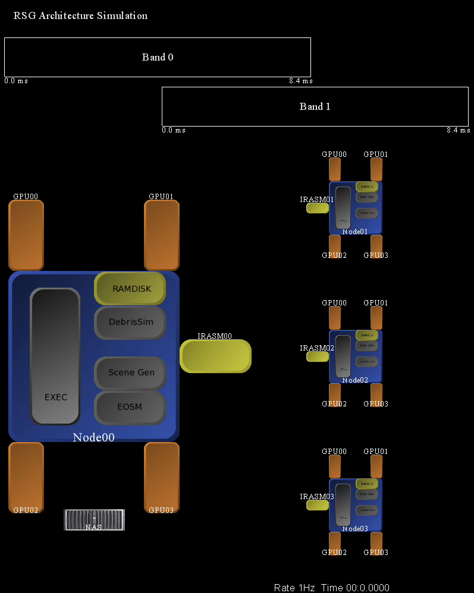
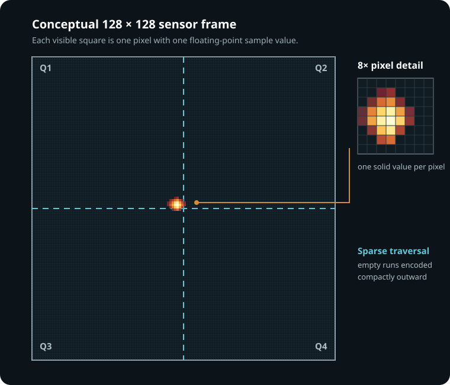

From offline analysis to a system that could keep pace
A scene generator synthesizes what an infrared seeker would see, frame by frame—including the target, its plume, the background, and sensor effects. For SM-3, that meant simulating the seeker imagery used to acquire, discriminate, and track an incoming ballistic-missile threat during midcourse flight.
As the subject-matter expert and principal engineer responsible for scene generation, I led its evolution from a CPU-only, non-real-time tool into a system that could support hardware- and software-in-the-loop testing while preserving the scientific fidelity engineers depended on.
The answer was not simply “add a GPU.” The real-time scene generator grew into four high-speed, multi-core nodes with four GPUs each. I also helped develop the software and custom drivers that managed low-latency messaging over InfiniBand, RDMA, NUMA over a PCIe switch, and GPUDirect.
Designing and testing the architecture without hardware
I created a tool I called rsgarch, a discrete-event architecture simulator driven by actual trade-study timing results. It tracked rendered scenes, individual rendered objects, message and data transfers, node and GPU assignments, PCIe and inter-node transfers, object queues, band synchronization, image combination, and downstream sensor operations. Its purpose was to design candidate architectures, expose bottlenecks, and thoroughly test and understand each design before purchasing and building the hardware.
across 16 GPUs
CUDA workloads
RASM combine & scale
GPUDirect · RDMA · NUMA
meet 8.21 ms budget

An animated timing model
Each data object moved to its designated component as the timeline progressed across parallel processing bands. Reviewers could watch rendered objects and complete scenes travel through nodes, GPUs, RASM, storage, and downstream models—with movement synchronized to measured timing.
Original rsgarch animation frame from the architecture tool.
Keeping the work on the GPUs
I integrated CUDA into the RASM image-assembly layer so it could combine objects, apply radiance conversions, place point sources, and scale imagery at selectable fidelity. Explicit device assignment, GPU-resident operations, GPUDirect, and preloading reduced transfers and avoided timing spikes. On the remaining CPU paths, SSE skipped empty image regions four floating-point values at a time.
__m128* pixels = (__m128*) image;
for (unsigned i = 0; i < pixel_count / 4; ++i) {
if (_mm_movemask_ps(_mm_cmpeq_ps(*pixels, zero)) == 15) {
++pixels; continue; // skip an empty block
}
compose_active_pixels(i, image, scene);
}Compression designed for the imagery—not generic files
Raw simulation recordings commonly exceeded 40 GB. I designed an object-centered compression algorithm with configurable fidelity modes. The highest-quality mode retained lossless floating-point samples; more compact, near-lossless modes encoded 8-bit radiance gradients, sparse skip distances, partial-pixel information, repeated values, and optional spatial interpolation. Depending on the imagery and selected fidelity, the algorithm could achieve more than 100× compression while remaining lossless or nearly lossless.

Why quadrants helped
Most of a scientific frame was empty. The encoder walked outward from the object through four quadrants, keeping dense information near the signal while compactly representing long empty runs and repeated gradients.
Reconstructed visual of the object-centered traversal used by the compression design.
for each quadrant, begin at the object center
walk outward through active rows
if the next sample is far away: emit SKIP(distance)
else if fidelity is lossless: emit FLOAT(sample)
else: emit GRADIENT(sample)
collapse repeated values and optional interpolated runsPlayback became an engineering tool
I also developed playback and comparison tools that could jump to a specific frame or range, synchronize recordings, extract images, and report metadata and statistics such as centroid, intensity, pixel count, and pass/fail tolerances. Engineers could revisit a precise point in a lossless recording to test, debug, or analyze behavior without rerunning an hours-long simulation—saving countless hours.
Four nodes, 16 GPUs, and InfiniBand messaging worked as one timed pipeline.
CUDA and SIMD helped reduce broader simulation runs from >48 hours to <2.5 hours.
Lossless playback turned recorded imagery into repeatable evidence.
Banner imagery is an original, non-proprietary portfolio visualization. Code examples are sanitized excerpts illustrating the implemented SSE and compression patterns.